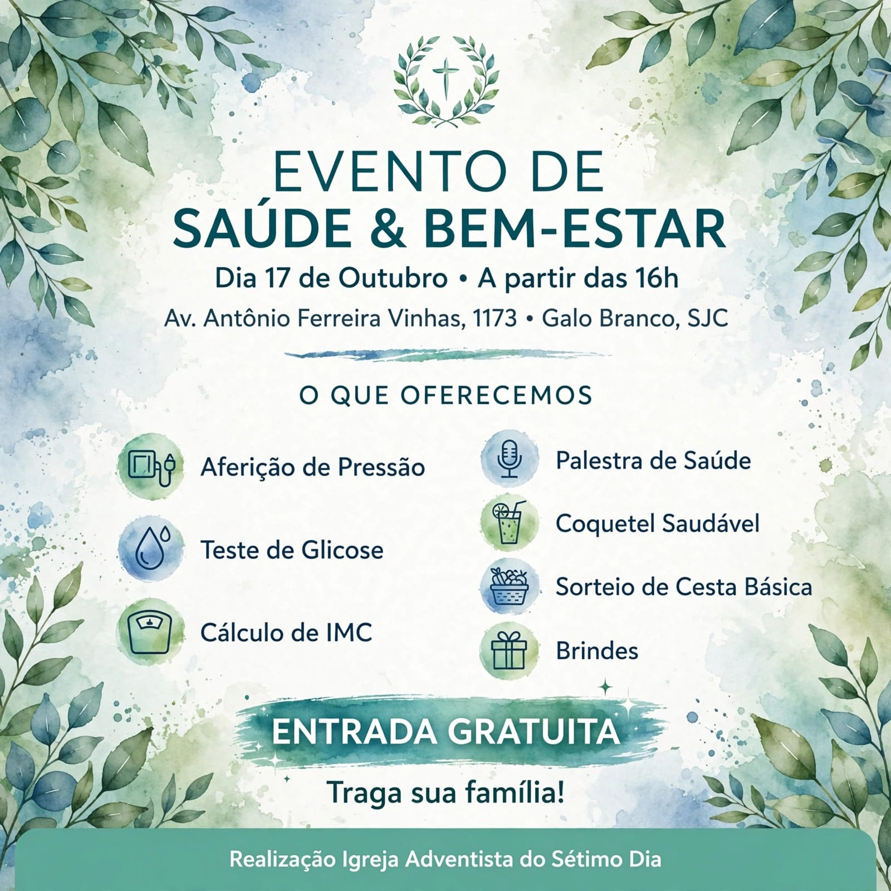
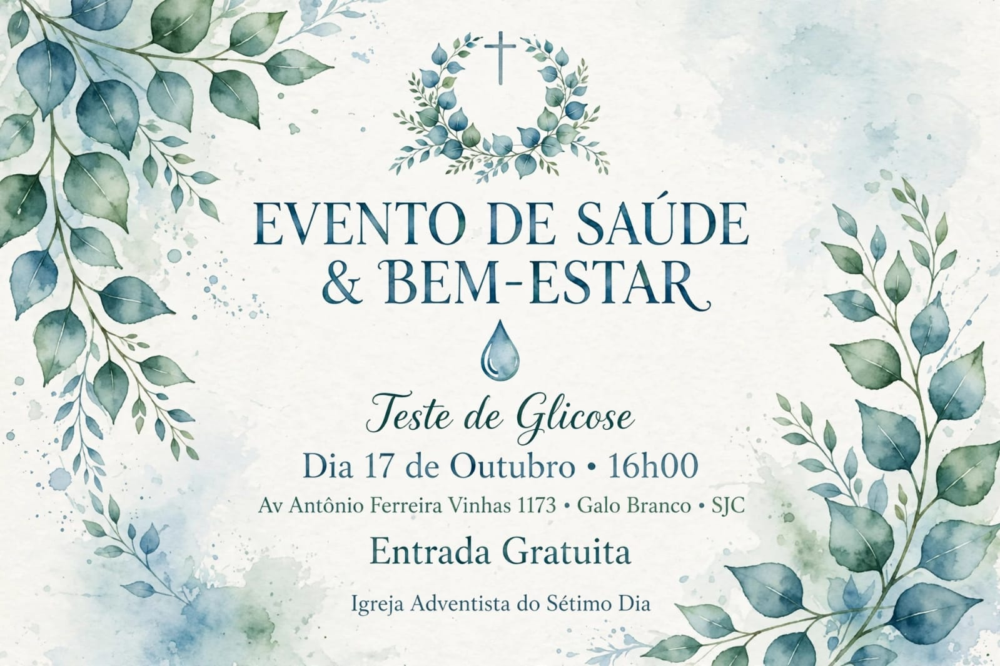

Aferição de pressão
Confira sua pressão arterial e receba orientação.
Um convite para cuidar de você
Um encontro acolhedor para aprender, cuidar da saúde e compartilhar bons momentos com quem você ama.
Entrada gratuita — traga sua família!

Cuidado que aproxima
Reserve um tempo para você. Venha receber orientações, conhecer hábitos saudáveis e viver uma tarde de acolhimento e comunidade.
Cuidado de perto
Informação e cuidado em um só lugar, com atividades pensadas para incentivar escolhas mais saudáveis.
Confira sua pressão arterial e receba orientação.
Uma oportunidade para observar um indicador importante da saúde.
Conheça seu índice de massa corporal e tire dúvidas.
Aprenda ideias práticas para cuidar melhor de si.
As atividades são informativas e não substituem uma consulta ou avaliação profissional individual.

Uma tarde para compartilharMais que um evento
Além dos cuidados com a saúde, preparamos momentos leves para você aproveitar e levar boas lembranças para casa.
Você é nosso convidado
Compartilhe esse convite com amigos, familiares e vizinhos. Vai ser uma alegria receber vocês!
Anote na agenda